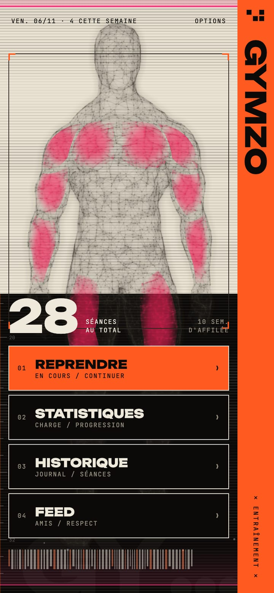
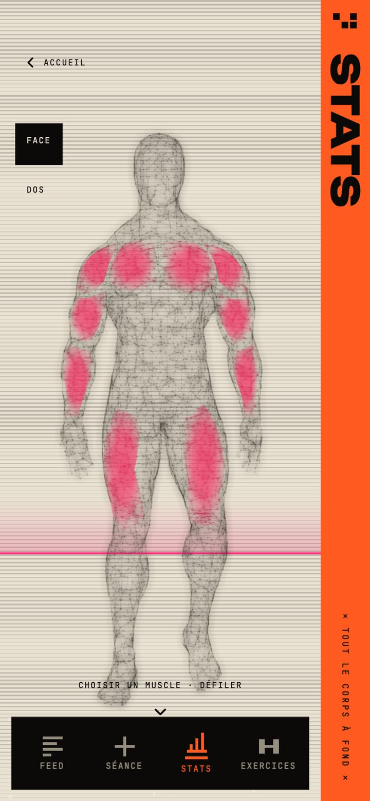
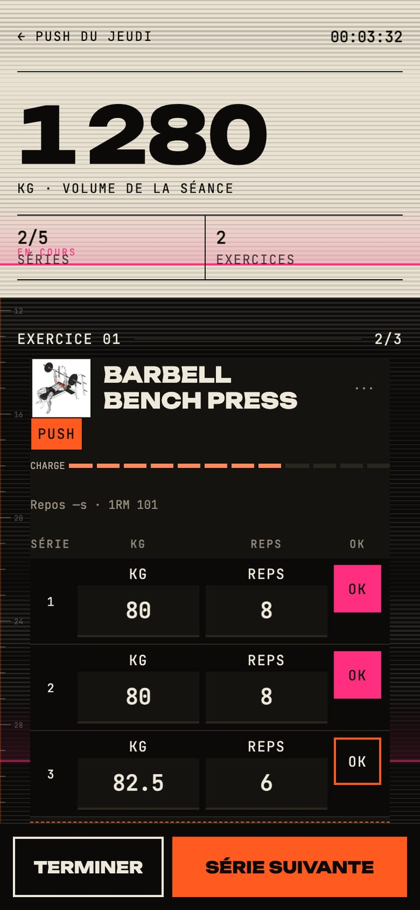
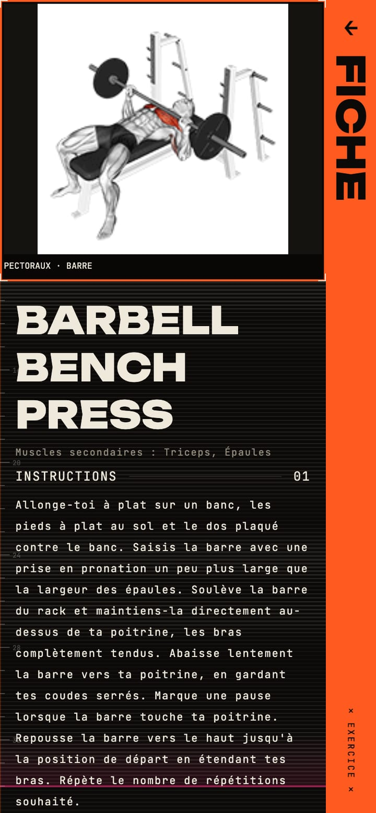
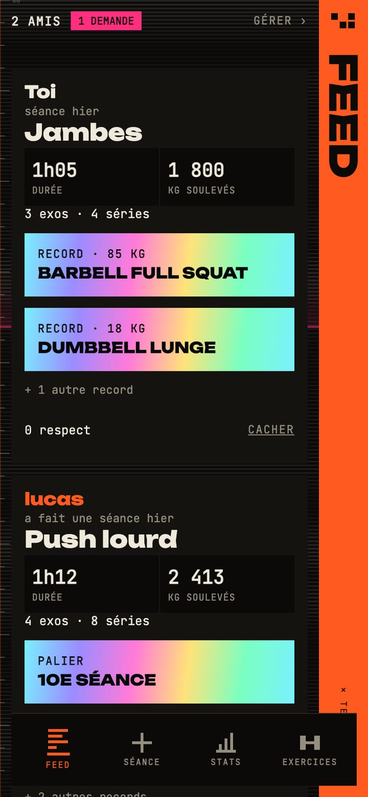
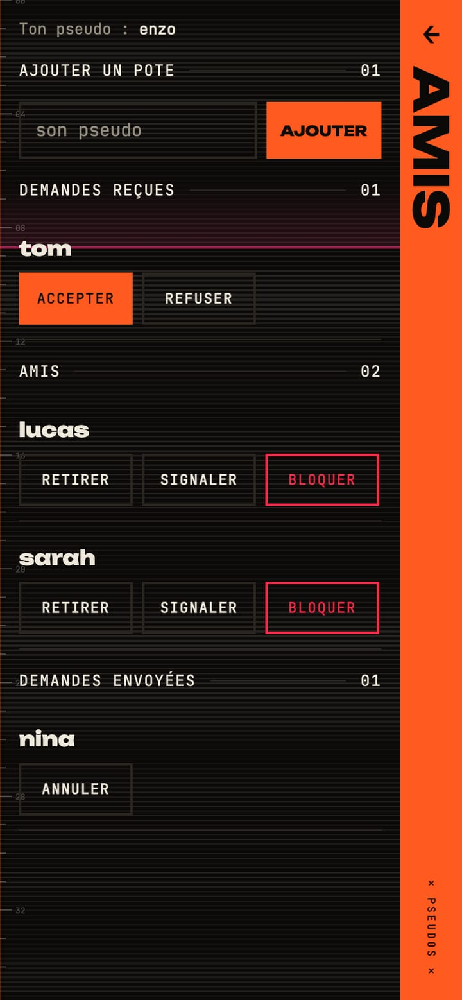

La muscu comme un HUD de jeu
Gymzo est un carnet d'entraînement où chaque série alimente un modèle de charge par muscle. Un corps scanné s'allume au fil de la semaine, et ton groupe de potes devient ton groupe d'entraînement.
- Android
- React Native
- FastAPI
- PostgreSQL
- Projet personnel
- En test privé


Donner envie de remplir le carnet
Un carnet de muscu ressemble vite à un tableur. J'ai voulu qu'enregistrer une série ait un effet visible : l'objectif de la semaine, c'est d'allumer tout le corps.
Le calcul compare le volume récent de chaque muscle à sa propre habitude. Les niveaux ne classent donc pas tes muscles entre eux : ils disent ce qui reste à faire.
Rapide entre deux séries
- Poids et répétitions enregistrés sans bouton de sauvegarde.
- Minuteur de repos et historique de l'exercice à portée de main.
- Bibliothèque de 1 324 exercices, avec recherche et filtres par muscle.
- Mode invité complet hors ligne, migré vers le compte à l'inscription, sans doublon.


Un cercle privé, pas un réseau social
- Entre amis. Ajout par pseudo, et la demande doit être acceptée.
- Un résumé. Durée, volume, records et paliers, jamais le détail des séries.
- Un seul geste. Le bouton RESPECT remplace les commentaires et le chat.
- Ton contrôle. Chaque séance peut être cachée, et on peut signaler ou bloquer.


SIGNAL
Du design d'affiche avec une énergie de jeu vidéo : de grands aplats, une bande verticale qui porte le titre de l'écran et des lignes de scan en fond. L'animation est réservée aux moments forts, comme le flash d'une série validée.
Une vraie app, de bout en bout
- Mobile. React Native, Expo, TypeScript, React Query avec cache hors ligne, Zustand.
- API. Python, FastAPI, SQLAlchemy, Alembic, PostgreSQL.
- Sécurité. Sessions révocables, limites de tentatives, réinitialisation par code, suppression de compte.
- Infra. Docker Compose sur mon homelab Proxmox, exposé par un tunnel Cloudflare.
- Qualité. Près de 400 tests automatisés, côté API et côté mobile.